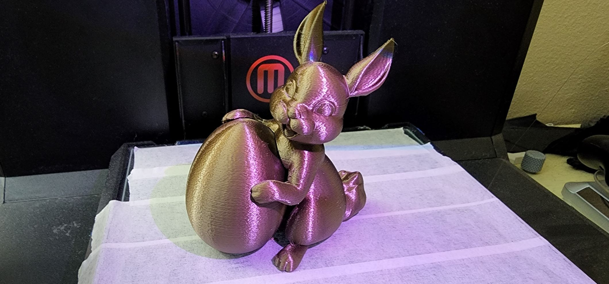
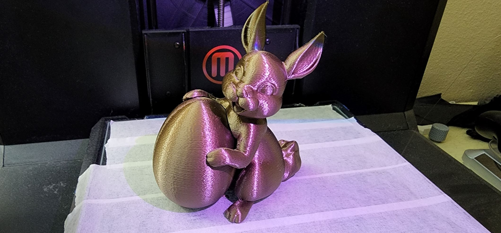

Overview
Purpose
To share my interest and hobby of 3D pritning, with friends and family.
Audience
People who enjoy seeing modles and figures that have been 3D printed.
Branding
Website Logo
Style Guide
Color Palette
Palette URL:
https://coolors.co/ff6d18-0b3954-fffbff-1789fc-6f8ab7| Primary | Secondary | Accent 1 | Accent 2 |
|---|---|---|---|
| #fffbff | #ff6D18 | #0b3954 | #1789fc |
Typography
Heading Font: Berkshire Swash
Paragraph Font: Lora
Normal paragraph example
The best Whitewater Rafting in Colorado, White Water Rafting Company offers rafting on the Colorado and Roaring Fork Rivers in Glenwood Springs. Since 1974, we have been family owned and operated, rafting the Shoshone section of Glenwood Canyon and beyond.
Colored paragraph example
Trips vary from mild and great for families, to trips exclusively for physically fit and experienced rafters. No matter what type of river adventures you are seeking, White Water Rafting Company can make it happen for you.
Navigation
Site Map
Wireframes

Home
What is 3D printing
3D printing is the process of making a physical object from a three-dimensional digital model, laying down thin layers of a material in succession. Another way I like to describe 3D printing to people that may not know is. Drawing with hot glue. Plastic material most commonly known as filament. Which is made of different materials such as PLA, ABS and Nylon to name a few. This material Is fed through a device called an extruder. The extruder places the material layer by layer onto a base or platform. The prints are made one layer at a time and can take anywhere from 30 minutes to 30 hours depending on the size. 3D printing has opened a whole new world of what can be made at home by the everyday person. Parts that could cost you $40 at the store can be made for a fraction of the cost. All of this can be done from the comfort of your own home.
 

Getting Started
How to get started
Interested in trying your hand at 3D printing? But aren’t sure where to go or what to do? Much of what I’ve learned over the past 4 years has been self-taught. I’ve learned a lot through trial and error, but now can pass the knowledge to you. First, look for a good 3D printer. The printer I got can be found here, Qidi Printer It came with no need for assembly and the support from the company was wonderful. Once you get a printer and even before you receive it you can watch many videos online about how to use the printer and how to set it up. Link to a good video about the basics of printing. The last part about printing is getting the model ready to print. The model you want to 3D print will need to be converted into code that the printer can read. The printer reads a code known as STL. STL is a file format native to the stereolithography CAD software created by 3D Systems. There are many free programs that can prepare a model to be printed. The printer manufacturer for the most part always has their only program that can prepare the models. My favorite is called LycheeSlicer. Costs me $5 a month but gives me all the options I need to get a good 3D print. With these steps I hope you can get on the road to your own 3D printing hobby.


FAQ
FAQ
How much is a 3D printer?
Printers
3D printing used to be pricy, my brother told me a story of when they first came out, even a small printer was about $9000. But now days, 3D printers range anywhere from $150 to $3000 dollars. As with most items, the brand, size, and features determine the cost. In my opinion, the best printers are right in the middle of the price range. My first printer cost me $300 and did an amazing job. After a few years I upgraded to a bigger printer once I understood more about what I was doing.

What materials do you use?
Materials
Materials for 3D printing come in many different types, and almost any kind of color you can think of. Material is important, depending on what you want to print and do with the object will determine the type of material you want to get. You can get super hard materials, ones that are more flexible. Here are the two most common materials. PLA – Poly(lactic) acid – This one of the more common materials for the following. Because it has a low melting point, high strength, low thermal expansion, good layer adhesion, and high heat resistance. ABS - Acrylonitrile butadiene styrene - ABS provides favorable mechanical properties such as impact resistance, toughness, and rigidity when compared with other common polymers